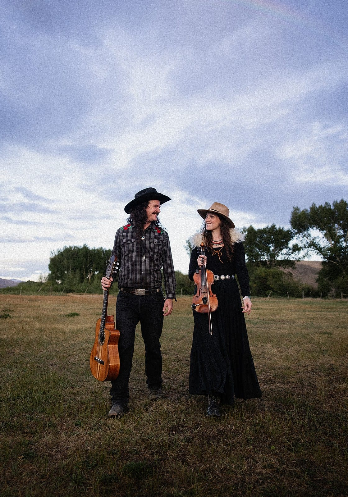
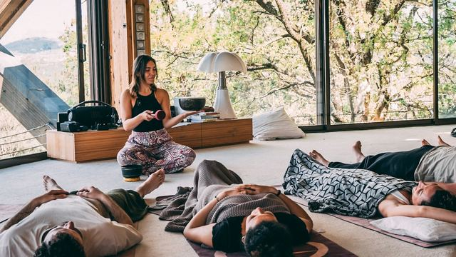
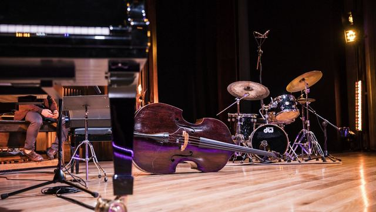
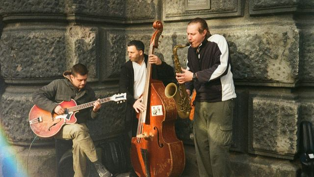
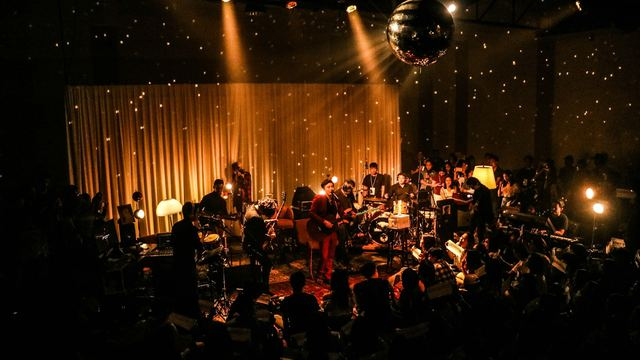
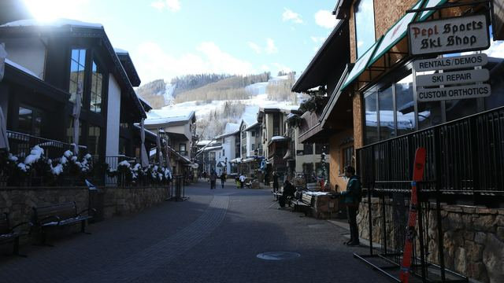
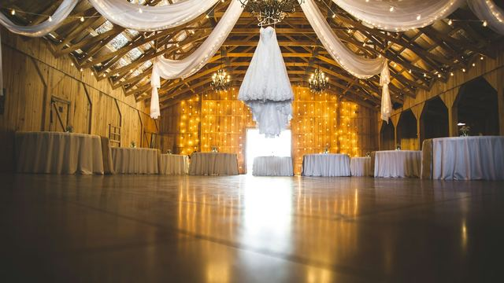
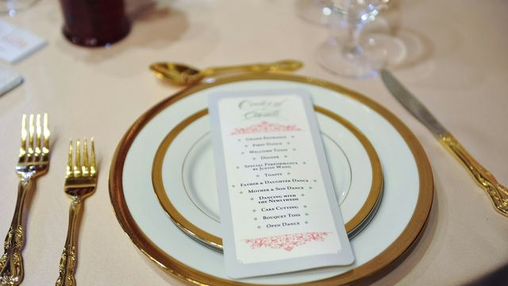

Blog
Writing on live music for events.
Occasional written notes about planning and pricing music and how it effects people.
Quadrasonic brings Signet Artists to Vail
Quadrasonic, a four-piece rock band that lives in the Vail Valley, is now one of our Featured Artists, so you can book a full band from right there in Vail.

Roma Ransom joins Signet Artists
Roma Ransom, the violin and guitar duo of Grace Easley and Gordon Lewis, is now one of our Featured Artists.
Emily Barnes joins Signet Artists
Folk singer-songwriter Emily Barnes, winner of the 2025 Hey Nonny Songwriting Contest, is now one of our Featured Artists.
Chelsey Webb joins Signet Artists
Country singer Chelsey Webb, the Colorado Country Music Hall of Fame’s 2025 Female Entertainer of the Year, is now one of our Featured Artists.

Why guests can't hear the toast
The speeches are the part of the night nobody gets to redo. Here's what goes wrong with a microphone in the hands of a nervous person, in plain words, and the three questions to ask before the night.

Why dinner gets louder as the night goes on
At seven the ballroom is pleasant. By 8:15 people are shouting across the table and someone asks the band to turn down. The band hasn't touched anything. Here's what's happening, what it does to your guests, and the two-level plan we set with you to keep dinner talkable.

What your venue does to the sound
The same band sounds different in a glass atrium and a carpeted ballroom. Here's why, in plain words, the one test you can do yourself in an empty venue, and what to tell the band before they load in.
Meghan Clarisse joins Signet Artists
Denver singer-songwriter Meghan Clarisse is now one of our Featured Artists. Here’s a little about her, what she plays and how you can book her.

How much sound system does an event need?
The venue form asks how many watts. A vendor quotes a 2,000-watt system. Neither number tells you whether 150 guests will hear the band. Here's what the numbers mean, in plain words, and the one question to ask the venue about outlets.
Why does music bring back memories?
Let’s look at what studies have found about how strongly songs bring back memories, which songs do it most and couples’ own songs, and how you can use all of it at an anniversary or milestone party.
Why do restaurants have live music?
We read through what studies of restaurants and bars found about music, how long guests stay and what they spend. We also looked at how loud it should be and what’s known about live music in particular.
Why do people sing along?
Here’s what researchers found about the songs that get a crowd singing, what happens when you know a chorus is coming, and whether singing together brings people closer.
Why do people play music at funerals?
If you're choosing music for a funeral or memorial service, here's what that music does, what families have said about choosing it, the songs people often ask for, and whether it has to be a hymn.
Why do dementia patients remember music?
We look at why old songs often stay with people living with dementia, what a song can bring back, and what researchers have found music can't do for memory.
What music do 80 year olds listen to?
Here are the years of music people in their late 70s, 80s and 90s grew up with, why the Beatles may suit an 80th birthday better than big band, and how to find out what one person loves.
Sing-along songs for seniors
Here are some songs that work for a sing-along with older adults. We'll also cover how to choose more for your residents and what trials of group singing found.
Last song of the night at a wedding
We looked at what research says about how people remember the end of an experience, what that may mean for the last song at your reception, and how couples choose it.
Karaoke team building
We looked at what researchers found about singing together and feeling close, what they haven’t shown about teamwork, and how live band karaoke works for a team evening.
Does music make food taste better?
Here's what lab studies and one live wine tasting found about music, noise and taste, and what that means for the music at a dinner you're hosting.
Party music for all ages
Here's what research says about the music each generation remembers best, and how to pick songs for a party where every age is in the same place.
Live music for memory care residents
Here's what the studies say live music can and can't do for residents living with dementia, the songs they respond to, how loud it should be, and how a performance differs from music therapy.
Is live music better than recorded?
Researchers have compared musicians playing in the same space with a recording played back. Here's what they found, and what live music hasn't been shown to do.
How to get people to dance at a wedding
Here’s what studies of real dance floors and concerts have found about getting people dancing, along with the limits of each one.
How does music affect people at a party?
We looked at what research has found about music and how people behave at events, and at the popular claims the research doesn't support.
Does loud music make people drink more?
We went through the studies on music and drinking to see what they found and how far you can trust each one, and here's what that means for the music at your company party.

Do sound baths work?
Here's what the studies of singing bowls and sound meditation have found, how small those studies tend to be and what the reviews conclude, plus what a sound bath can reasonably offer your team or group.
What is yacht rock?
Here's what the smooth soft rock of the late seventies sounds like, where the name came from, which songs count, and what you'll need for a yacht rock party, from the dress code to the band.
What is Americana music?
Here's what Americana music is and how it differs from country, along with the instruments, the artists, and which size of Americana band would suit a reception, a retreat or a wedding in Colorado.
What is a string quartet?
We'll walk you through the four instruments and what each one plays, how a trio, a duo or a single violinist compares, what strings play at a wedding, and which size to choose for a ceremony, a cocktail hour or a gala.

What instruments are in a jazz band?
Here’s what each instrument in a jazz band does, what the small bands are called, who plays in each, how a big band is laid out and which size suits a wedding, a dinner or a company event.
How loud should background music be at a party?
Background music should sit at a level people can talk over. Here's what that sounds like in plain terms and in decibels, how the size of the act and the space change it, and whether a singer works over dinner.

What is a jazz trio?
A jazz trio is three musicians, and most people want to know which three instruments that means. Here are the classic combinations, the trio we'd suggest for a private event, what a quartet adds and how to choose.

What a jazz band costs in Denver
A jazz band's price depends first on its size. Here's what the market charges for one guitarist, a duo, a trio and a quartet, for an hour and for an evening.
What a DJ costs in Denver
The word DJ covers two different purchases, and the market prices them a long way apart. Here's what a DJ costs for four hours, for a wedding and for a corporate party, and what you'd pay for a production DJ with lighting.
January office party ideas
Thinking about holding your company party after the holidays? Here’s why a January date works, seven ways to plan it and some themes that work without holiday decor.
How far ahead to book entertainment for a company party
The short answer is whenever you're ready. The longer answer covers the order the decisions usually go in, the paperwork that can take longer than the booking, and what to have ready when you ask a band for a price.
Gala entertainment ideas
Here are some ways to plan the music at a gala or an award night, part by part through the program, with a few thoughts on the celebrity emcee and the silent disco.
Corporate event entertainment ideas in Denver
Here are eleven ideas for the evening part of a company event, music and otherwise, with what each one asks of your guests and how big it needs to be.
Company picnic entertainment ideas in Denver
Here are eight ideas for your summer company picnic, from a band on the lawn to a party on the patio, with the shelter and power each one needs.
Company offsite ideas in Colorado for remote teams
Remote teams often get together for just one week a year. Here's how they plan a company offsite, where they go in Colorado, and seven great ideas for the evenings.
How far ahead to book wedding musicians in Colorado
Whenever you're ready is the short answer. What helps more is the order the decisions usually come in, what a booking involves, and the eight things to have ready before you write to anybody.

Corporate retreat evening ideas in Vail
The daytime schedule at a retreat is often the easy part to plan. Here are eight ideas for your evenings in Vail and the valley, along with some planner notes to help you work out which ones fit your venue.
Client appreciation event ideas in Denver
Here are eight ways to thank your clients without presenting to them, with notes for financial advisors, realtors and law firms.
Band or DJ for a Denver wedding or company party
Here's what a band and a DJ each bring to an event, what each one costs across Colorado, and why many hosts planning a full evening end up booking both.
Office holiday party entertainment ideas in Denver
Here are the formats a Denver office party can take, plus what changes for a large group or a January party.
How to read a band quote
Before you compare two totals, it helps to know what each one covers.
Where to hold a corporate holiday party in Denver in 2026
Here are sixteen venues with real private-event pages, from a mezzanine over Union Station to a hangar that holds 3,500, along with the notes we’d give a client on each one.
What changes when the reception is outdoors
Here's what to know about power, cover and the weather call, and why an outdoor site can make live music harder for your guests to hear and easier for the neighbors to hear. We'll also cover the Colorado decibel cap that most outdoor receptions fall under.
What live music costs for a corporate event
A band's price has two parts. Here's what each part covers, how two hours compares with four, and what the total can come to for the most common Denver corporate events.

What a band needs from the venue
Here's what to know about stage size, power, load-in and the paperwork your venue and your finance team will both ask for. Published stage-size guidance can run to more than double what our own bands ask for, and here's why.

How a live band works around a corporate program
A gala usually follows one document that puts everything in a fixed order. Here's what the band does around remarks, an award, an auction and a video package, and who gives the cue for each one.